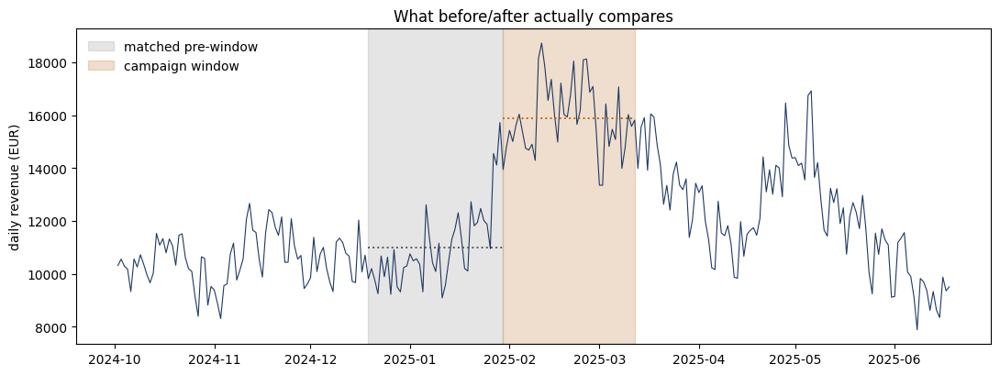
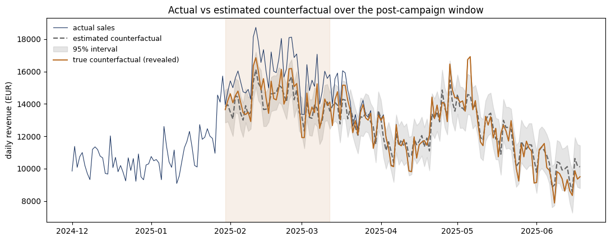
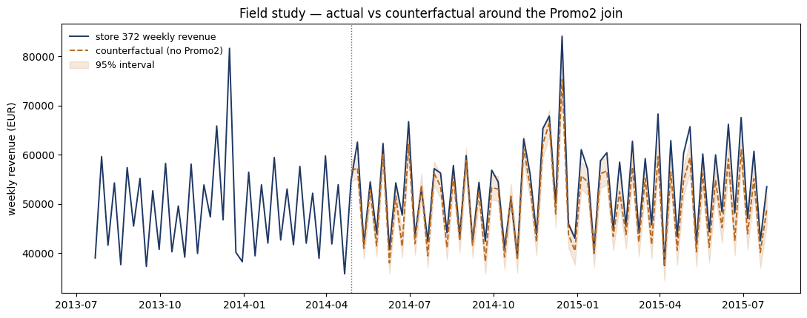

Applied project · Causal inference · Complete
Campaign Uplift: Measuring Causal Impact
Evaluating promotional campaign efficacy requires isolating incremental revenue from baseline market dynamics. This project establishes a counterfactual identification framework using structural time-series models, validates its accuracy against synthetic benchmarks with known injected treatment effects, and applies the methodology to evaluate a real retail intervention.
The Measurement Problem
Standard business analytics frequently evaluate marketing campaigns using naive pre-post or year-over-year revenue comparisons. These approaches implicitly assume stationarity in underlying demand, conflating organic growth trends, macro-seasonality, and promotional response. When a campaign coincides with a seasonal demand peak, naive attribution attributes organic market acceleration directly to marketing expenditure.

Rigorously isolating incremental impact requires estimating the unobserved counterfactual: predicting what sales trajectory would have occurred during the campaign window in the absence of treatment. This workflow constructs synthetic controls using state-space structural time-series models incorporating local level trends, weekly seasonality, and unexposed control product series as dynamic regressors, trained strictly on pre-intervention observations.
Methodology Validation on Synthetic Ground Truth
Because counterfactuals are inherently unobservable in observational field data, identification frameworks must be empirically benchmarked under controlled conditions. To evaluate estimator reliability, a synthetic dataset was constructed with a sealed, known treatment effect (+4.21% relative uplift) injected into the post-intervention window.
Four candidate model architectures were evaluated on a 90-day pre-campaign holdout window: a seasonal-naive baseline, deterministic regression without covariates, a Gradient Boosted Decision Tree (LightGBM) leveraging control product features, and the Bayesian structural state-space model. Architectures incorporating control product series achieved superior out-of-sample precision (MAPE 4.5%–5.1%). However, LightGBM was rejected for post-intervention counterfactual generation due to tree-based models' inability to extrapolate non-stationary linear trends beyond their training support.
| Candidate | Uses Controls | MAE | MAPE |
|---|---|---|---|
| Structural, controls and weekly seasonality | yes | 493 | 4.46% |
| LightGBM, controls and calendar features | yes | 540 | 5.05% |
| Seasonal naive, t − 365 | no | 1,903 | 18.04% |
| Classical OLS, calendar only | no | 2,021 | 19.53% |
The above metrics provide two readings. First, incorporating dynamic controls reduces forecasting error by approximately a factor of four, dropping MAPE from ~19% down to ~5%. Second, while gradient boosting achieves competitive out-of-sample precision (MAPE 5.05%), it remains structurally invalid for counterfactual generation. Tree-based models predict constant values within each leaf, rendering them completely unable to extrapolate non-stationary linear growth trends beyond their training support. Because counterfactual projection lies entirely forward in time, valid extrapolation is a requirement that holdout accuracy fails to capture.
| Estimate Method | Relative Uplift | Cumulative Value |
|---|---|---|
| True Ground Truth (sealed validation) | +4.21% | €75,222 |
| Structural Counterfactual Model | +4.62% · 95% CI [+0.30%, +8.91%] | €82,101 |
| Naive Pre-Post Comparison | +44.80% | — |
| Naive Year-over-Year Comparison | +43.70% | — |
The structural time-series estimator recovered the true treatment effect within 0.41 percentage points, with the 95% credible interval fully covering ground truth. In contrast, naive pre-post and year-over-year comparisons overestimated campaign performance tenfold (+44.8% and +43.7%).

Sensitivity Analysis & Robustness Checks
Evaluating estimator resilience under structural assumption violations required subjecting the pipeline to systematic falsification tests. A placebo intervention assigned to an unexposed pre-campaign period yielded an estimated uplift of +2.16% with a 95% credible interval spanning zero. This residual establishes the empirical noise floor of the state-space model, defining its minimal detectable effect size in practical deployment.
Further diagnostic checks examined temporal alignment and control pool isolation. Intentionally misspecifying the intervention start date revealed an asymmetric sensitivity profile, where lagging the assumed onset date corrupted baseline estimation far more severely than leading it. Finally, testing for violations of the Stable Unit Treatment Value Assumption (SUTVA)—by introducing synthetic treatment contamination into a single control regressor—shifted the estimated impact by 2.4 percentage points, demonstrating the necessity of rigorous control series insulation.
Field Application: Retail Promotional Campaign
The validated framework was subsequently deployed to analyse a real-world intervention within the Rossmann retail dataset. Store 372 enrolled in a recurring promotional coupon programme on April 28, 2014, providing 69 pre-intervention and 66 post-intervention weeks. Control store selection was conducted strictly using pre-intervention correlation metrics ($r \ge 0.985$) to prevent post-treatment selection bias.

Cross-validation between the custom structural model and Google’s CausalImpact library places the effect in positive territory under both implementations: +6.1% against a range of +2.4% to +8.2%. That range is the spread across three seeds of the same fit, which is variational rather than exact; the five controls were selected for correlation with the treated store, which leaves their coefficients weakly identified and the variational optimum initialisation-dependent. The agreement therefore supports the direction of the effect rather than its magnitude.
However, diagnostic falsification tests on historical pre-join dates revealed statistical anomalies: pre-intervention placebo runs detected systematic negative residuals (−0.14% to −2.65%), with one period excluding zero. This pattern indicates endogenous selection into treatment—meaning stores experiencing baseline revenue dips were systematically more likely to adopt the coupon programme. Furthermore, post-treatment lift did not concentrate exclusively in active coupon distribution cycles. Consequently, the estimated uplift is reported as an upper bound rather than an unconditioned causal magnitude.
Reproducibility & Repository Artefacts
The complete analytical pipeline is fully reproducible via an executed Jupyter notebook covering data generation, structural specification, cross-validation, sensitivity testing, and field deployment. Synthetic benchmarking datasets are programmatically generated via deterministic random seeding, and raw source files govern control group selection protocols without manual intervention.
Limitations
While synthetic validation confirms pipeline mechanics, the data generator and structural estimator share the same model family. This creates a favorable testing environment that does not measure estimator resilience against model misspecification.
Evaluating a single treated unit against five highly correlated control stores introduces collinearity, leaving individual regressor coefficients weakly identified. A single-store study also cannot cleanly separate true campaign uplift from store-specific baseline trends.
Future Work
Applying regularization shrinkage priors to control coefficients would resolve collinearity and stabilize model fitting across different random seeds.
Transitioning to a multi-unit design represents the most impact-driven extension. Evaluating multiple treated stores simultaneously allows the model to isolate true campaign uplift from store-specific temporal drift, offering a structural fix for the selection bias identified during placebo testing.